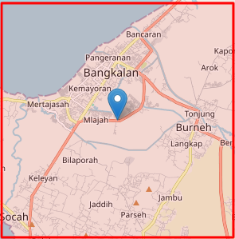
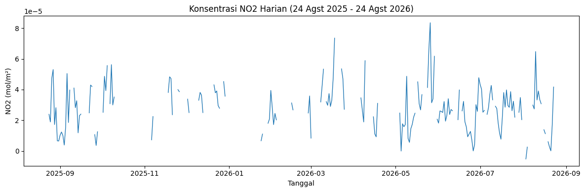
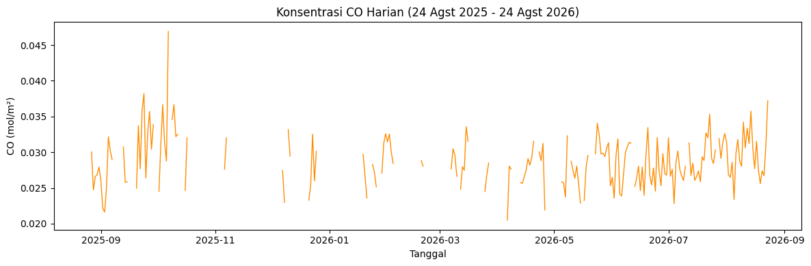
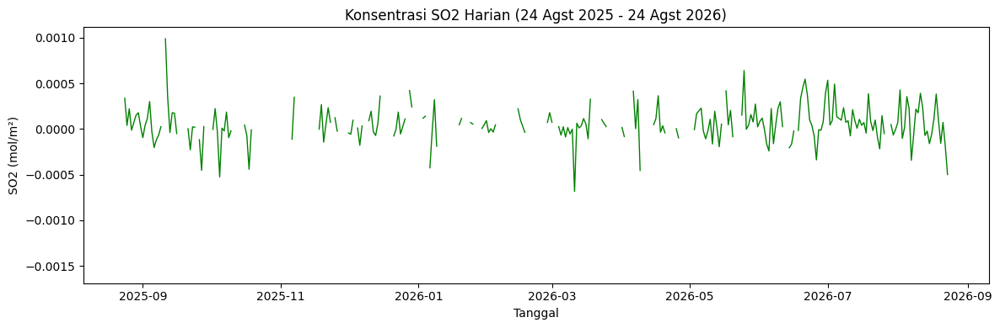
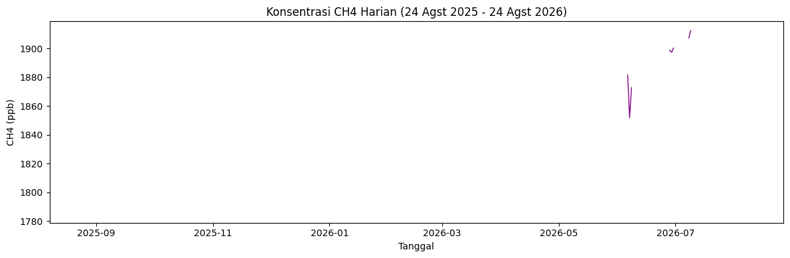

Business Understanding#
Mengamati Kualitas Udara#
Apa itu Indeks Kualitas Udara (Air Quality Index)?
Indeks Kualitas Udara (AQI) adalah angka yang meringkas kondisi pencemaran udara di suatu wilayah pada waktu tertentu menjadi satu skala yang mudah dipahami. AQI dihitung dari konsentrasi beberapa polutan udara utama, lalu dikonversi jadi kategori seperti “Baik”, “Sedang”, “Tidak Sehat”, hingga “Berbahaya”. Semakin tinggi nilai AQI, semakin besar risiko kesehatan yang ditimbulkan bagi manusia mulai dari gangguan pernapasan ringan sampai penyakit kronis pada paparan jangka panjang.
Unsur-unsur yang menyebabkan baik/buruknya kualitas udara
Kualitas udara ditentukan oleh konsentrasi gas-gas polutan yang terkandung di atmosfer, bersumber dari aktivitas manusia (kendaraan bermotor, industri, pertanian) maupun alami (kebakaran lahan, aktivitas vulkanik). Pada tugas ini, pengamatan difokuskan pada empat polutan yang tersedia datanya lewat satelit Sentinel-5P:
NO2 (Nitrogen Dioksida) - dihasilkan terutama dari pembakaran bahan bakar fosil: kendaraan bermotor, pembangkit listrik, dan aktivitas industri. Konsentrasi tinggi berasosiasi dengan gangguan pernapasan, memperburuk asma/bronkitis, dan berkontribusi pada pembentukan hujan asam serta ozon troposfer.
CO (Karbon Monoksida) - gas hasil pembakaran tidak sempurna, sumbernya mirip NO2 (kendaraan, industri) ditambah kebakaran lahan/hutan. Berbahaya karena mengikat hemoglobin darah lebih kuat dibanding oksigen, sehingga mengganggu distribusi oksigen ke seluruh tubuh.
SO2 (Sulfur Dioksida) - dihasilkan dari pembakaran bahan bakar fosil yang mengandung sulfur, terutama industri dan pembangkit listrik tenaga batu bara. Konsentrasi tinggi menyebabkan iritasi saluran pernapasan dan merupakan penyebab utama hujan asam.
CH4 (Metana) - gas rumah kaca yang berasal dari aktivitas pertanian (sawah, peternakan), pembusukan sampah organik (TPA), dan kebocoran gas alam. Tidak berbahaya langsung bagi pernapasan seperti tiga polutan lainnya, tetapi berkontribusi besar terhadap pemanasan global dan menjadi indikator aktivitas biogenik/pertanian di suatu wilayah.
Sumber data
Data diperoleh dari citra satelit Sentinel-5P (TROPOMI), bagian dari program Copernicus milik European Space Agency (ESA), yang secara khusus dirancang untuk memantau komposisi atmosfer bumi termasuk gas-gas polutan di atas. Satelit ini menyediakan data harian dengan cakupan global, diakses melalui Copernicus Data Space Ecosystem.
Wilayah dan tujuan pengamatan
Tugas ini bertujuan untuk mengamati dan memvisualisasikan tren konsentrasi NO2, CO, SO2, dan CH4 di wilayah Bangkalan, Burneh, Madura selama periode satu tahun, yaitu 24 Agustus 2025 s.d. 24 Agustus 2026, guna memahami pola fluktuasi kualitas udara di wilayah tersebut sepanjang waktu — apakah cenderung stabil, musiman, atau ada tren kenaikan/penurunan tertentu. Wilayah pengamatan ditentukan dalam bentuk bounding box (koordinat 112.70–112.80 BT, -7.10 s.d. -7.00 LS), divisualisasikan pada peta dasar OpenStreetMap menggunakan QGIS sebagai bagian dari tahap ini.
Sumber data
Data diperoleh dari citra satelit Sentinel-5P (TROPOMI), bagian dari program Copernicus milik European Space Agency (ESA), yang secara khusus dirancang untuk memantau komposisi atmosfer bumi termasuk gas-gas polutan di atas. Satelit ini menyediakan data harian dengan cakupan global, diakses melalui Copernicus Data Space Ecosystem.
Tujuan pengamatan
Tugas ini bertujuan untuk mengamati dan memvisualisasikan tren konsentrasi NO2 dan CO di wilayah Bangkalan, Burneh selama periode satu tahun, yaitu 24 Agustus 2025 s.d. 24 Agustus 2026, guna memahami pola fluktuasi kualitas udara di wilayah tersebut sepanjang waktu, apakah cenderung stabil, musiman, atau ada tren kenaikan/penurunan tertentu.
Data Understanding#
Collecting / Mengumpulkan Data dari Copernicus Data Space#
Data kualitas udara diperoleh dari citra satelit Sentinel-5P (TROPOMI) melalui Copernicus Data Space Ecosystem, diakses menggunakan library openeo di Python (dijalankan di Google Colab). Empat polutan diamati: NO2, CO, SO2, dan CH4, untuk wilayah **Bangkalan, Burneh, ** dalam rentang waktu 24 Agustus 2025 s.d. 24 Agustus 2026.

Wilayah pengamatan (AOI) ditentukan lewat geojson.io (bounding box: 112.70–112.80 BT, -7.10 s.d. -7.00 LS), lalu divisualisasikan resmi di QGIS sebagai bagian Business Understanding.
!pip install openeo netCDF4
import openeo
connection = openeo.connect("openeo.dataspace.copernicus.eu")
connection.authenticate_oidc()
bbox = {"west": 112.70, "south": -7.10, "east": 112.80, "north": -7.00}
periode = ["2025-08-24", "2026-08-24"]
polutan_list = ["NO2", "CO", "SO2", "CH4"]
for p in polutan_list:
cube = connection.load_collection(
"SENTINEL_5P_L2", temporal_extent=periode, spatial_extent=bbox, bands=[p]
)
cube_daily = cube.aggregate_temporal_period(reducer="mean", period="day")
cube_daily.execute_batch(title=f"{p} crawl", outputfile=f"{p}.nc")
Membaca Data & Melaporkan Kondisi Aslinya#
Data NetCDF dibaca apa adanya (grid harian dirata-ratakan spasial pakai np.nanmean, tanpa interpolasi) agar kondisi data termasuk bagian yang hilang bisa dilaporkan dulu sebelum masuk tahap pembersihan di Data Preparation.
import netCDF4, numpy as np, pandas as pd
def nc_to_daily_raw(nc_path, band):
ds = netCDF4.Dataset(nc_path)
raw = ds.variables[band][:]
time = ds.variables["t"][:]
dates = netCDF4.num2date(time, units=ds.variables["t"].units)
filled = raw.astype(np.float64).filled(np.nan)
daily_dates = [d.strftime("%Y-%m-%d") for d in dates]
daily_values = [float(np.nanmean(filled[i])) for i in range(filled.shape[0])]
df = pd.DataFrame({"date": daily_dates, band: daily_values})
df["date"] = pd.to_datetime(df["date"])
return df.set_index("date")
df_no2 = nc_to_daily_raw("NO2.nc", "NO2")
df_co = nc_to_daily_raw("CO.nc", "CO")
df_so2 = nc_to_daily_raw("SO2.nc", "SO2")
df_ch4 = nc_to_daily_raw("CH4.nc", "CH4")
Identifikasi missing value:
Polutan |
Hari Kosong |
Total Hari Tercatat |
Persentase |
|---|---|---|---|
NO2 |
157 |
363 |
43.3% |
CO |
142 |
365 |
38.9% |
SO2 |
111 |
361 |
30.7% |
CH4 |
197 |
214 |
92.1% |
Seluruh polutan menunjukkan proporsi data kosong yang cukup tinggi, dengan CH4 paling ekstrem (92.1%). Ini konsisten dengan karakteristik sensor Sentinel-5P yang sensitif terhadap tutupan awan dan khusus CH4, syarat kualitas datanya (kanal SWIR) jauh lebih ketat dibanding tiga polutan lain, sehingga cakupan datanya pun jauh lebih jarang (hanya 214 dari ~366 hari kalender yang bahkan tercatat sama sekali).
Sebagai catatan tambahan, nilai SO2 dan sebagian kecil NO2 mengandung angka negatif (SO2: 92 dari 250 nilai valid, NO2: 2 dari 206 nilai valid). Ini bukan kesalahan pembacaan nilai negatif pada retrieval atmosfer Sentinel-5P adalah hal umum yang muncul akibat noise instrumen ketika konsentrasi polutan sesungguhnya sangat rendah/mendekati nol, bukan indikasi bahwa terdapat “polutan minus” secara fisik.
Eksplorasi Data - Peta#
Peta interaktif (folium, basemap OpenStreetMap) menampilkan batas AOI dan ringkasan rata-rata keempat polutan dalam satu popup:
import folium
center = [(bbox["south"] + bbox["north"]) / 2, (bbox["west"] + bbox["east"]) / 2]
peta = folium.Map(location=center, zoom_start=11, tiles="OpenStreetMap")
folium.Rectangle(
bounds=[[bbox["south"], bbox["west"]], [bbox["north"], bbox["east"]]],
color="red", fill=True, fill_opacity=0.1, tooltip="Area of Interest (AOI)",
).add_to(peta)
popup_text = f"""
Wilayah: Bangkalan, Burneh<br>
Periode: 24 Agustus 2025 - 24 Agustus 2026<br>
Rata-rata NO2: {df_no2['NO2'].mean():.6f}<br>
Rata-rata CO: {df_co['CO'].mean():.6f}<br>
Rata-rata SO2: {df_so2['SO2'].mean():.6f}<br>
Rata-rata CH4: {df_ch4['CH4'].mean():.6f}
"""
folium.Marker(location=center, popup=popup_text, tooltip="Ringkasan Kualitas Udara").add_to(peta)
peta.save("peta_kualitas_udara.html")
peta
Popup menampilkan ringkasan: rata-rata NO2 0.000028, CO 0.028745, SO2 0.000050, CH4 1879.92 (satuan CH4 jauh lebih besar dibanding tiga polutan lain karena diukur dalam ppb, bukan mol/m²).
Eksplorasi Data - Grafik & CSV per Polutan#

NO2 (rentang nilai: -0.0000052 s.d. 0.0000835, rata-rata 0.000028 mol/m²), sumber utamanya bersifat harian/rutin (kendaraan bermotor, industri).
import matplotlib.pyplot as plt
plt.figure(figsize=(12, 4))
plt.plot(df_no2.index, df_no2["NO2"], linewidth=1)
plt.title("Konsentrasi NO2 Harian (24 Agst 2025 - 24 Agst 2026)")
plt.xlabel("Tanggal"); plt.ylabel("NO2 (mol/m²)")
plt.tight_layout(); plt.show()
df_no2.to_csv("no2_daily.csv")

CO (rentang nilai: 0.0205 s.d. 0.0469, rata-rata 0.0287 mol/m², tidak ada nilai negatif), diamati untuk menangkap lonjakan akibat pembakaran tidak sempurna.
plt.figure(figsize=(12, 4))
plt.plot(df_co.index, df_co["CO"], linewidth=1, color="darkorange")
plt.title("Konsentrasi CO Harian (24 Agst 2025 - 24 Agst 2026)")
plt.xlabel("Tanggal"); plt.ylabel("CO (mol/m²)")
plt.tight_layout(); plt.show()
df_co.to_csv("co_daily.csv")

SO2 (rentang nilai: -0.00156 s.d. 0.00099, rata-rata 0.00005 mol/m², sebagian besar nilai berada di sekitar nol), sumbernya berbeda dari NO2/CO (industri, pembangkit listrik batu bara).
plt.figure(figsize=(12, 4))
plt.plot(df_so2.index, df_so2["SO2"], linewidth=1, color="green")
plt.title("Konsentrasi SO2 Harian (24 Agst 2025 - 24 Agst 2026)")
plt.xlabel("Tanggal"); plt.ylabel("SO2 (mol/m²)")
plt.tight_layout(); plt.show()
df_so2.to_csv("so2_daily.csv")

CH4 (rentang nilai: 1785 s.d. 1913 ppb, rata-rata 1880 ppb), data paling jarang (92.1% kosong) sehingga grafiknya tampak terputus-putus; karakteristik sumbernya (pertanian, TPA, kebocoran gas alam) berbeda dari tiga polutan lain.
plt.figure(figsize=(12, 4))
plt.plot(df_ch4.index, df_ch4["CH4"], linewidth=1, color="purple")
plt.title("Konsentrasi CH4 Harian (24 Agst 2025 - 24 Agst 2026)")
plt.xlabel("Tanggal"); plt.ylabel("CH4 (ppb)")
plt.tight_layout(); plt.show()
df_ch4.to_csv("ch4_daily.csv")
Ringkasan Output#
Output |
Keterangan |
|---|---|
|
Time series harian per polutan, periode 24 Agst 2025–24 Agst 2026 |
|
Peta interaktif AOI Bangkalan-Burneh + ringkasan rata-rata 4 polutan |
Missing value |
NO2 43.3%, CO 38.9%, SO2 30.7%, CH4 92.1% — dilaporkan apa adanya, belum ditambal |